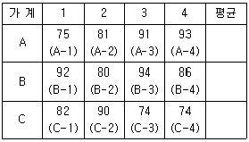
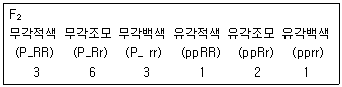
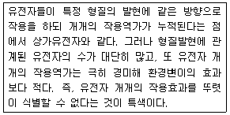
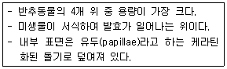

축산기사 (2014-03-02 기출문제)
1과목: 가축육종학
1. 어느 종모우가 이미 12.5%만큼 근친이 되어 있다고 할때 자기 딸소와 교배해서 생긴 후손의 근친계수는?
- 5/32
- 9/32
- 1/8
- 1/4
(정답률: 59%)

2. 돼지의 경제형실 중 일반적으로 유전력(heritability)이 가장 높은 것은?
- 등지방 두께
- 체장
- 사료효율
- 이유 후 일당 증체량
(정답률: 61%)
3. 다음 교배방법 중 잡종강세(Heterosis)의 효과를 얻기 위해서 사용되는 것은?
- 아비소와 딸소간의 교배
- 어미소와 아들소간의 교배
- 조부와 손녀간의 교배
- 혈연관계가 없는 개체끼리의 교배
(정답률: 87%)
4. 다음은 수퇘지의 체중(kg)이다. 검정된 12마리의 수퇘지 중 4마리만을 종돈으로 이용하고 나머지는 도태하고자 한다. 개체선발에 의하여 선발되는 개체의 번호는?

- A-3, A-4, B-1, B-3
- A-4, B-1, B-3, C-2
- B-1, B-2, B-3, B-4
- A-4, B-1, B-3, B-4
(정답률: 71%)
5. 가축 개체가 잡종임으로 인하여 얻어지는 개체 잡종강세 효과뿐만 아니라 개체의 모친이 잡종으로 인하여 얻어지는 모체 잡종강제 효과 모두 100%로 유지하기 위하여 돼지에서 가장 많이 이용되는 교배방법은?
- 3품종 종료 교배
- 3품종 윤환 종료 교배
- 3품종 윤환 교배
- 상호 역교배
(정답률: 54%)
6. 무각적색(PPRR)과 유각백색(pprr)인 Shorthorn종 육우를 교배하여 생산한 F1끼리 교배하여 얻은 F2의 분리 비가 다음 [보기]와 같다. 이에 대한 설명으로 옳은 것은?

- 무각(P)은 유각(p)에 대해 불완전우성이다.
- 적색(R)은 백색(r)에 대해 완전우성이다.
- 두 형질 중 1쌍만 불완전우성이다.
- F1의 표현형은 무각적색이다.
(정답률: 73%)
7. 다음의 [보기]의 설명에 해당되는 것은?

- 변경유전자(modifying gene)
- 중복유전자(duplicate gene)
- 복다유전자(multiple gene)
- 중다유전자(polygene)
(정답률: 61%)
8. 유우의 형질 중 근친교배에 크게 영향을 받지 않는 형질은?
- 번식효율
- 유생산량
- 유지방율
- 활력
(정답률: 53%)
9. 한 염색체상에 X-Y-Z의 순으로 있는 유전자에 대해 X-Y간의 교차율은 20%, Y-Z간의 교차율은 10%이며, 실제로 X-Z간의 이중교차율이 1%라면 병발계수(coefficient of coincidence)는?
- 0.20
- 0.30
- 0.33
- 0.50
(정답률: 46%)
10. 계란의 비중은 다음 중 어느 형질을 개량하기 위하여 측정하는가?
- 산란수
- 난각색
- 난각품질
- 난형지수
(정답률: 59%)
11. 고기소에서 교잡종 생산에 이용되는 품종의 선택에 있어 고려할 사항으로 가장 거리가 먼 것은?
- 품종 간의 차이
- 암소의 성성숙 도달 연령
- 대체 종빈우의 체형
- 종모우의 확보 두수
(정답률: 62%)
12. 한 비유기의 생산량을 계산하는 방법을, 1개월 간격으로 월검정(月檢定)을 10회 실시한 다음 월검정성적의 누계에 30.5를 곱하여 3⑤일 생산량을 산출하는 법은?
- MCC법(modified contemporary comparison)
- BLUP법(best linear unbiased prediction)
- TC(type classification)
- CDM법(centering date method)
(정답률: 68%)
13. 돼지의 후대검정에 대한 설명으로 옳은 것은?
- 주로 종돈으로 이용할 암퇘지의 종축가치를 판정하기 위해 이용한다.
- 후대검정, 개체선발, 혈통선발을 함께 이용하는 경우가 많다.
- 개체 자신의 능력에 근거한 검정방법이다.
- 후대검정은 시설, 비용이 적게 든다는 장점이 있다.
(정답률: 72%)
14. A품종의 12개월 체중은 440kg이고, B품종은 360kg이며, A, B품종의 교잡종은 12개월령 체중이 420kg이었다면 잡종강세 효과는 약 얼마인가?
- 5%
- 10%
- 13%
- 16%
(정답률: 69%)
15. 어느 종빈돈군의 평균산자수가 9두, 종축으로 개체선발된 종빈돈의 평균산자수가 11두, 산자수의 유전력이 20%였다. 선발된 종빈돈이 다음 세대에 기여하는 유전적 개량량은?
- 0.2두
- 0.3두
- 0.4두
- 0.5두
(정답률: 70%)
16. 산란계에서 30~40주령에 측정한 난중의 유전능력은?
- 5 ~10%
- 15 ~ 20%
- 40 ~ 50%
- 60 ~ 70%
(정답률: 55%)
17. 돼지의 스트레스 감수성(PSS) 여부를 판정하는 방법으로 부적합한 것은?
- 모색 판정법
- DNA 분석법
- 혈청 중 CPK 활성 판정법
- 할로텐(halothane) 검정법
(정답률: 73%)
18. 젖소의 산유 능력 검정에 있어 전검정일 산유량이 28kg이고 검정일 산유량이 32kg이었으며 검정일 간격이 31일인 경우 TIM(test interval method)에 의한 검정 기간 산유량은?
- 775.0 kg
- 782.0 kg
- 932.0 kg
- 960.0 kg
(정답률: 63%)
19. 어느 젖소 집단에 있어 유전자가 Hardy-Weinberg 평형상태에 있을 때, 흑색인자의 유전자 빈도를 a라 하면 이 집단에서 3세대 경과 후 이의 유전자 빈도는 어떻게 변화되겠는가?
- a
- a+3
- a×3
- a3
(정답률: 72%)
20. 소의 체위 측정에서 수평면에서 기갑 최고부까지의 길이를 무엇이라 하는가?
- 체고
- 체장
- 고장
- 십자부고
(정답률: 82%)
2과목: 가축번식생리학
21. 수정란의 착상과 임신의 유지에 적합하도록 부생식기관의 기능발현을 조절하는 성선자극 호르몬은?
- 에스트로겐(estrogen)
- 안드로겐(androgen)
- 프로게스테론(progesterone)
- 릴렉신(relaxin)
(정답률: 76%)
22. 포유가축의 정소나 난소를 표적기관으로 하여 그 기능을 지배하는 성선자극 호르몬이 아닌 것은?
- 난포자극호르몬(FSH)
- 황체형성호르몬(LH)
- 프로게스테론(progesterone)
- 프로락틴(prolactin)
(정답률: 38%)
23. 가축에 있어서 정자와 난자가 만나서 수정이 이루어지는 부위는?
- 난관누두부
- 난관팽대부
- 난관채
- 난관자궁접속부
(정답률: 76%)
24. 정액 희석액 구성성분 중 pH(산도)를 조절하는 물질은?
- 포도당
- 구연산
- 난황
- 항생물질
(정답률: 79%)
25. 포유가축의 자궁이 수행하는 생리학적 기능을 올바르게 설명한 것은?
- 교미, 난자와 정자의 수송, 수정란 착상, 임신유지 및 분만개시
- 교미, 난자와 정자의 수송, 황체기능의 조절, 임신유지 및 분만개시
- 난자와 정자의 수송, 수정란 착상, 비유개시, 임신유지 및 분만개시
- 난자와 정자의 수송, 수정란 착상, 황체기능의 조절, 임신유지 및 분만개시
(정답률: 72%)
26. 비유(泌乳) 개시시 분비가 상승되는 호르몬이 아닌 것은?
- 부신피질호르몬(glucocorticoid)
- 프로락틴(prolactin)
- 난포호르몬(estrogen)
- 황체호르몬(progesterone)
(정답률: 58%)
27. 암컷 가축의 분만 후 발정을 위한 자궁퇴축 기간이 바르게 연결된 것은?
- 소 : 35~40일, 돼지 : 25~28일, 면양 : 10~15일
- 소 : 90~100일, 돼지 : 5~7일, 면양 : 10~15일
- 소 : 90~100일, 돼지 : 5~7일, 면양 : 25~30일
- 소 : 35~40일, 돼지 : 25~28일, 면양 : 25~30일
(정답률: 62%)
28. 소에 있어서 암소의 생식기 내에서 정자가 수정 능력을 유지하고 있는 시간은?
- 5~6시간
- 10~15시간
- 28~30시간
- 40~42시간
(정답률: 62%)
29. 소의 정자에서 운동에 필요한 에너지를 합성하는 부위와 세포 소기관은?
- 두부-골지체
- 경부-골지체
- 중편부-미토콘드리아
- 종부-미토콘드리아
(정답률: 82%)
30. 수가축에 있어서 춘기발동을 일으키는 직접적인 원인이 되는 호르몬은?
- 난포자극호르몬(FSH)과 테스토스테론(testosterone)
- 황체형성호르몬(LH)과 테스토스테론(testosterone)
- 황체형성호르몬방출호르몬(LHRH)과 테스토스테론(testosterone)
- 에스트로겐(estrogen)과 테스토스테론(testosterone)
(정답률: 56%)
31. 임신한 포유동물의 태반이나 자궁내막에서는 태반호르몬을 분비하는데 다음 중 여기에 해당되지 않는 것은?
- LH
- PMSG
- hCG
- placenta lactogen
(정답률: 58%)
32. 다음 가축 중 교미자극이 가해지지 않는 한 배란이 일어나지 않고 발정이 계속되는 것은?
- 토끼
- 소
- 말
- 돼지
(정답률: 83%)
33. 소 수정란 이식 기술에 관한 설명 중 틀린 것은?
- 비외과적방법에 의거 난자를 회수할 경우 배란 후 5일이상 경과한 후 채란하는 것이 좋다.
- 일반적으로 배반포까지 발달한 것보다 2~8세포기나 상실배를 이식하는 것이 좋다.
- 이식하고자 하는 수정란의 일령이 수란우의 배란후의 일수와 일치하지 않으면 임신율이 매우 저하된다.
- 수정란의 형태적 이상은 이식후의 임신율을 저하시킨다.
(정답률: 77%)
34. 단일성 번식계절을 가지는 동물은?
- 소
- 돼지
- 면양
- 닭
(정답률: 83%)
35. 배란된 난자가 착상될 때까지 난관에서의 수송시간이 바르지 않게 연결된 것은?
- 소 : 72시간
- 돼지 : 48시간
- 면양 : 86시간
- 마우스 : 72시간
(정답률: 52%)
36. 다음 중 성숙한 소와 돼지의 발정주기와 발정지속시간을 모두 올바르게 연결한 것은?
- 소 : 18~20일, 15~17시간, 돼지: 18~22일, 48~72시간
- 소 : 21~22일, 18~20시간, 돼지: 18~22일, 48~72시간
- 소 : 18~20일, 18~20시간, 돼지: 18~22일, 24~48시간
- 소 : 21~22일, 15~17시간, 돼지: 23~25일, 24~48시간
(정답률: 71%)
37. 소의 유선발육에 관한 설명으로 틀린 것은?
- 일반적으로 유방의 발육은 체중 증가에 의해서는 영향을 받지 않는다.
- 성성숙이 가까워지면 유방의 유선관계가 급속도로 발달한다.
- 초유구(初乳逑) 및 백혈구 등이 출현하는 시기는 임신 9개월이다.
- 유방의 중량은 임신 후 최초의 3개월간은 비임신우와 거의 차이가 없다.
(정답률: 79%)
38. 소에서 세균감염에 의한 급·만성의 전염병으로 유산을 일으키는 것은?
- 브루셀라병
- 과립성질염
- 트리코모나스병
- 톡소플라즈마병
(정답률: 85%)
39. 가축의 임신을 진단할 때 초심자라도 쓰기 쉬운 방법은?
- 직장검사법
- 질점막조직검사법
- 방사선진단법
- 초음파진단법
(정답률: 76%)
40. 다음 중 황체 호르몬의 생리작용으로 옳은 것은?
- 자궁운동의 촉진
- 난포호르몬의 활성 촉진
- 자궁액의 분비 증대
- 유선세포의 발육과 분화 억제
(정답률: 45%)
3과목: 가축사양학
41. 영양소는 유기영양소와 무기영양소로 구분되는데 다음 중 일반성문에 해당되며 무기영양소에 해당되는 것은?
- 조회분
- 조단백질
- 조지방
- 탄수화물
(정답률: 82%)
42. 다음 중 반추위내 미생물이 합성 공급할 수 없어 보충해 주는 것이 좋은 비타민은?
- 비타민 K
- 나이아신(Niacin)
- 알파-토코페롤(α-Tocopherol)
- 바이오틴(Biotin)
(정답률: 57%)
43. 한우의 임신말기 2개월간 유지 이외의 추가영양소 요구량을 가소화 에너지로 나타내면 얼마인가?
- 3.10 Mcal
- 3.20 Mcal
- 3.30 Mcal
- 3.40 Mcal
(정답률: 59%)
44. 다음 중 펠렛팅의 장점으로 틀린 것은?
- 증기 및 가압으로 병원성 세균 등이 파괴된다.
- 사료성분의 소화율을 향상시킨다.
- 사료섭취량을 증가시킨다.
- 허실되는 사료랑은 증가한다.
(정답률: 84%)
45. 성장 중인 가축에서 증체량의 사료섭취량에 대한 비율로 나타내는 영양가치 평가법은?
- 사료효율
- 생물가
- 사료단위
- 영양율
(정답률: 78%)
46. 다음 중 젖소에서의 건유기 사양 설명으로 틀린 것은?
- 젖소의 임신말기가 되면 태아의 발육이 왕성해져 충분한 영양이 요구되는 시기이다.
- 오랫동안 비유로 인하여 휴식과 안정이 필요하고 건유기간은 90일 정도가 바람직하다.
- 건유기간이 너무 길면 비만증상이 나타나 유열 등의 대사성 질병이 나타날 수 있다.
- 건유를 시키지 않고 계속 착유를 했을 경우 다음 유기의 산유량이 30% 정도 감소한다.
(정답률: 77%)
47. 사료의 부피를 줄이며 사료섭취량을 높이기 위해 가루사료를 고온·고압하에서 단단한 알맹이 사료로 만든 다음 이를 다시 거칠게 분쇄하여 만든 사료는?
- 가루사료
- 펠렛사료
- 크럼블사료
- 큐브사료
(정답률: 70%)
48. 착유우의 일일산유량이 최고에 도달하는 시기는?
- 비유초기
- 비유중기
- 비유말기
- 건유기
(정답률: 64%)
49. 변형된 분자 사슬형 지방산으로서 불포화지방산의 이중결합과 유사한 방식으로 세포막의 유동성을 증가하고 고리구조형 지방산을 합성하는 지방산은?
- 네르본 산(nervonic acid)
- 팔미톨레 산(palmitoleic acid)
- 올레 산(oleic acid)
- 튜버큘로스테아르 산(tuberculostearic acid)
(정답률: 50%)
50. 다음 중 반추위 미분해율이 가장 높은 단백질 공급원인 사료는?
- 대두박
- 알팔파 분말
- 어분
- 카세인
(정답률: 64%)
51. 다음 설명에 해당하는 위의 종류는?

- 1위
- 2위
- 3위
- 4위
(정답률: 77%)
52. 어떤 쥐가 하루에 1g의 지방을 섭취하였고, 0.25g의 지방을 분으로 배설하였다. 이 쥐의 대사성 분지방이 하루에 0.15g이라면 지방의 진정소화율(truedigestibility)은?
- 60%
- 75%
- 85%
- 90%
(정답률: 48%)
53. 유지율이 3.2%인 우유를 1일 22kg 생산할 경우 유지율이 4%인 표준유를 계산하면 약 얼마인가?
- 15 kg
- 19.4 kg
- 20.1 kg
- 22 kg
(정답률: 76%)
54. 반추동물에서는 요소나 암모니아와 같은 물질이 단백질원으로 이용되고 있는데, 이러한 물질을 무엇이라 하는가?
- 진정단백질(true protein)
- 조단백질(crude protein)
- 비단백태질소화합물(NPN)
- 미생물체단백질(microbial protein)
(정답률: 81%)
55. 동물에 필요한 영양소의 특성을 바르게 설명한 것은?
- 전분은 일종의 조섬유이다.
- 인지질(phospholipid)은 단순지방이다.
- 칼륨(K)은 다량 필수 무기질에 속한다.
- 시스틴(cystine)은 필수아미노산이다.
(정답률: 70%)
56. 다음 중 유지방 합성과 가장 관계가 밀접한 것은?
- 올레인산(oleic acid)
- 프로피온산(propionic acid)
- 아세틱산(acetic acid)
- 뷰트릭산(butryic acid)
(정답률: 66%)
57. 다음 중 소화기관의 해부학적 기능 차이로 인해 혈당(blood glucose)치가 가장 낮을 것으로 예상되는 동물은?
- 돼지
- 말
- 닭
- 소
(정답률: 72%)
58. 착유우에 있어서 사료 단백질 중 불용성 단백질(UIP)의 적정 비율은?
- 35%
- 45%
- 55%
- 65%
(정답률: 59%)
59. 다음중 지방간(脂肪肝)의 설명으로 옳지 않은 것은?
- 콜린(choline)이 부족할 때 나타난다.
- 항지방간인자(Methionine 등)가 부족할 때 발생한다.
- 특정한 독성물은 간손상을 일으켜 중성지방의 간세포 침윤을 일으킨다.
- 아미노산이 결핍된 사료, 탄수화물, 지방함량이 많은 사료 등의 과다섭취와는 관계가 없다.
(정답률: 86%)
60. 볏짚과 옥수수 사일리지의 TDN이 각각 43%, 67%라고 할 때 볏짚 40%, 옥수수 사일리지 60%를 섞어서 조제한 조사료의 TDN함량은?
- 55.2%
- 57.4%
- 62.5%
- 45.7%
(정답률: 72%)
4과목: 사료작물학 및 초지학
61. 다년생목초나 1년생 사료작물로부터 가축에게 공급할 수 있는 주요 영양소가 아닌 것은?
- 탄수화물
- 가소화단백질
- 광물질 및 비타민
- 리그닌
(정답률: 73%)
62. 여름철 예취와 가을의 최종 예취시기는 초지관리상 중요한 문제이다. 다음 중 설명이 잘못된 것은?
- 한여름 지온이 27℃ 이상일 때에는 목초를 베는 것을 피한다.
- 가을에 너무 늦게 예취하면 추운 지방에서는 월동에 지장이 있다.
- 가을철에 일 평균 기온이 5℃ 되는 날로부터 40일전이 최종 예취의 적기이다.
- 하고현상을 피하기 위해서는 목초를 충분히 생육시켜야 한다.
(정답률: 59%)
63. 사료작물을 생존연한에 따라 분류할 때 일년생, 월년생, 다년생, 영년생으로 나눌 수 있는데 다음 중 1년생 사료작물에 속하는 것은?
- 티머시
- 이탈리안 라이그라스
- 옥수수
- 화이트 클로버
(정답률: 55%)
64. 다음 중 조단백질 함량이 가장 높은 조사료는?
- 옥수수 사일리지
- 티머시 건초
- 수단그라스 청초
- 알팔파 건초(초기)
(정답률: 69%)
65. 잘 조성된 초지에 칼리성문 120kg/ha를 추비로 주려고 한다. 칼리(K) 함량이 60%인 염화가리 비료로는 얼마나 주어야 하는가?
- 72 kg/ha
- 200 kg/ha
- 240 kg/ha
- 300 kg/ha
(정답률: 62%)
66. 다음 중 예취적기를 추정하는 설명으로 옳지 않은 것은?
- 1번초의 예취적기는 화본과 목초는 출수 초기에 콩과 목초는 10% 정도 꽃이 핀 시기이다.
- 초지 군락 내부 지표면의 상대조도가 5%일 때가 예취적기이다.
- 예취 후 재생시에 최대건물생산속도를 나타내는 시기인 예취 후 3~4주경이 되는 시기가 예취적기이다.
- 최대건물생산속도를 나타내는 시기의 최적엽면적지수 보다 1.5배의 엽면적을 나타내는 시기인 평균생산력이 가장 높은 시기가 예취적기이다.
(정답률: 48%)
67. 알팔파의 형태 및 생리·생태적 특징으로 알맞은 것은?
- 꽃은 두상서화이다.
- 단년생 두과목초이다.
- 줄기는 포복경이다.
- 벌에 의한 수분작용을 트리핑(tripping)이라고 한다.
(정답률: 68%)
68. 우리나라 초지의 저위(低位) 생산성에 영향을 미치는 요인이 아닌 것은?
- 추비량의 부족
- 조성초기 관리의 미숙
- 청예를 주로 한 초지이용
- 이른 봄 및 늦가을의 적절한 이용
(정답률: 61%)
69. 옥수수나 수단그라스계 잡종의 후작으로 이용되는 단경기 사료작물에 대한 설명으로 가장 옳은 것은?
- 연맥은 짧은 기간에 많은 수량을 내고 월동이 잘 되므로 중부지방에 알맞다.
- 사료용 유채는 단백질이 높고 토양 중 수분과 질소 함량이 높으면 수량이 높으므로 건초로 이용하는 것이 가장 좋다.
- 이탈리안 라이그라스는 초기생육이 좋고 기호성이 좋으나 월동성이 떨어지므로 주로 남부지방에서 이용된다.
- 유채와 연맥은 서로 토양요구도와 관리 및 이용방법이 다르므로 혼파해서 사용해서는 절대 안 된다.
(정답률: 74%)
70. 인경(비늘 줄기)에 양분을 축적하여 영양번식을 하는 목초는?
- 톨 페스큐
- 오차드그라스
- 알팔파
- 티머시
(정답률: 59%)
71. 사료작물의 작부체계에서 농업경영상 지켜야 할 조건에 해당하지 않는 것은?
- 농가 노동배분의 합리화
- 토양비옥도의 지속적인 유지
- 사료작물의 특성에 따른 초종과 품종을 조합하여 위험을 분산
- 국내에서 사료작물 사초생산성 높은 옥수수 단작에 의한 생산량 증가
(정답률: 70%)
72. 여름철 벼 대체 사료작물(논에서 사료작물재배)을 재배할 때 가장 중요하게 고려되어야 할 것은?
- 내한성(耐寒性)
- 내습성(耐濕性)
- 내병성(耐病性)
- 내동성(耐冬性)
(정답률: 76%)
73. 다음 중부지방의 작부체계 중 주작물인 옥수수의 파종을 가장 적기에 할 수 있는 작부체계는?
- 호밀 + 옥수수
- 보리 + 옥수수
- 크림손 클로버 + 옥수수
- 가을 귀리(연맥) + 옥수수
(정답률: 50%)
74. 콩과목초 파종시 근류균의 접종은 매우 중요하다. 그러면 콩과목초의 근류균은 어떤 비료성분을 고정하여 목초에게 주는가?
- 질소
- 인산
- 칼륨
- 마그네슘
(정답률: 75%)
75. 다음 중 초지의 하고대책과 거리가 먼 것은?
- 질소질 비료의 추비를 억제한다.
- 스프링클러에 의한 관개를 실시한다.
- 초지조성의 대상지를 점질토양이나 사질토양으로 선정한다.
- 하고에 비교적 강한 초종인 톨 페스큐, 오차드그라스등을 선택한다.
(정답률: 52%)
76. 조사료의 종류 중 TDN 함량이 가장 적은 것은?
- 볏짚
- 옥수수
- 알팔파
- 오차드그라스(초기)
(정답률: 71%)
77. 다음 중 건초에 대한 설명으로 옳은 것은?
- 수분함량이 25%로 저장성을 높였다.
- 갈색 건초가 양분의 손실이 적다.
- 최고 품질의 화본과 건초는 잎의 비율이 40% 이상 되어야 한다.
- 어린 송아지에게 급여하면 위의 발달을 촉진한다.
(정답률: 64%)
78. 우리나라에서 부실초지(저위 생산성 초지)가 되는 직접적인 요인은?
- 불경운조성방법
- 관리 기술 미숙
- 기계에 의한 진압
- 발아율이 낮은 종자 사용
(정답률: 66%)
79. 다음 중 옥수수의 특징이라고 볼 수 없는 것은?
- 표고에 관계없이 잘 자란다.
- 분얼경이 잘 발생한다.
- 고온을 좋아하며, 다비작물이다.
- 사료용으로는 마치종이 널리 재배된다.
(정답률: 56%)
80. 옥수수의 파종기 선택에 관한 설명으로 가장 부적합한 것은?
- 지온이 10℃ 이상이면 파종이 가능하다.
- 산간지대에서는 늦서리 피해를 고려한다.
- 중부지역의 파종적기는 4월 중·하순이 가장 적당하다.
- 만생종은 늦게 파종해야 총 수량이 많아진다.
(정답률: 70%)
5과목: 축산경영학 및 축산물가공학
81. 축산경영 운영에 있어 노동능률 향상 방안으로 옳지 않은 것은?
- 작업의 간략화
- 작업의 분업화
- 작업의 협업화
- 작업의 중복화
(정답률: 80%)
82. 감가상각비 계산 방법의 종류로 옳은 것은?
- 정액법
- 손익분기법
- 이자계산법
- 자산재평가법
(정답률: 75%)
83. 평균생산량이 최대가 되는 점에 대한 설명으로 옳은 것은?
- 한계생산이 0 이 되는 점이다.
- 한계생산이 최대가 되는 점이다.
- 평균생산과 한계생산이 일치하는 점이다.
- 총생산곡선에서 제2영역과 제3영역의 사이 점이다.
(정답률: 68%)
84. 축산경영 농가에 대한 진단방법으로 경영실험농장(모델농장)의 경영성과 등의 자료를 비교하는 것은?
- 표준 비교법
- 직접 비교법
- 시계열 비교법
- 계획대비 실적 비교법
(정답률: 67%)
85. 축산경영조직에 영향을 미치는 경제적 결정조건은?
- 기상상태
- 축산진흥정책
- 토질 및 지형
- 시장과의 거리
(정답률: 66%)
86. 축산경영의 일반적 특징으로 옳은 것은?
- 고용기회 증대
- 생산물의 저장
- 1차 생산의 성격
- 직접적인 토지이용
(정답률: 50%)
87. 매출액이 1200만원이며 총변동비가 600만원, 고정비가 400만원인 목장의 손익분기 매출액은?
- 600만원
- 700만원
- 800만원
- 1200만원
(정답률: 64%)
88. 다음 중 축산조수입과 관계가 가장 먼 것은?
- 정부지원금
- 브랜드 가치
- 우유 판매수입
- 부산물 거래가격
(정답률: 61%)
89. 축종과 경영조직과의 적합성을 판단하는 요인으로 옳지 않은 것은?
- 입지조건의 적정여부
- 가축두수의 적정여부
- 사료작물재배의 적정여부
- 경영조직 인력의 적정여부
(정답률: 53%)
90. 유통마진을 산출하는 계산식으로 옳은 것은?
- 생산자 수취가격 - 판매비용
- 소비자 지불가격 - 생산자 수취가격
- 생산자 수취가격 - 소비자 지불가격
- 소비자 지불가격 + 생산자 수취가격
(정답률: 70%)
91. 자연치즈 제조 시 단단한 커드 발생의 원인이 아닌 것은?
- 높은 칼슘 농도
- 낮은 pH
- 단백질 함량을 과도하게 높인 표준화
- 응유 과정 중 낮은 벳트 온도
(정답률: 64%)
92. 우유의 유당 함량범위는?
- 3.3 ~ 3.8%
- 3.9 ~ 4.3%
- 4.5 ~ 5.0%
- 5.1 ~ 5.6%
(정답률: 50%)
93. 식육에 함유되어 있는 일반적인 수분 함량은?
- 45 ~ 50%
- 55 ~ 60%
- 65 ~ 75%
- 80% 이상
(정답률: 68%)
94. 아이스크림의 제조에 사용되는 감미료 중 단맛의 강도가 가장 높은 것은?
- 과당
- 유당
- 솔비톨
- 설탕
(정답률: 68%)
95. 식육의 freezer burn에 대한 설명으로 틀린 것은?
- 동결육의 표면건조로 인한 변색이 발생한다.
- 상품가치가 상승된다.
- 조직감이 질겨진다.
- 이취가 생성된다.
(정답률: 79%)
96. 염지액을 제조할 때 주의사항으로 틀린 것은?
- 염지액 제조를 위해 사용되는 물은 미생물에 오염되지 않은 깨끗한 물을 이용한다.
- 천연 향신료를 사용할 경우에는 천으로 싸서 끓는 물에 담가 향을 용출시킨 후 여과하여 사용한다.
- 염지액 제조를 위해 아스코르빈산과 아질산염을 함께 물에 넣어 충분히 용해시킨 후에 사용한다.
- 염지액을 사용하기 전 염지액 내에 존재하는 세균과 잔존하는 산소를 배출하기 위해 끓여서 사용한다.
(정답률: 63%)
97. 우유의 단백질 중 카제인의 등전점은?
- pH 4.0
- pH 4.6
- pH 5.2
- pH 5.6
(정답률: 72%)
98. 가축의 종류에 따라 식육의 풍미가 달라지는 것은 식육의 어떤 성분에 기인하기 때문인가?
- 수분
- 비타민
- 지질
- 무기질
(정답률: 74%)
99. 시유에서 균질처리공정의 목적과 거리가 먼 것은?
- 지방구를 미세화시킨다.
- 지방의 분리를 방지한다.
- 미생물 사멸 및 효소를 파괴한다.
- 단백질의 소화율이 향상된다.
(정답률: 66%)
100. 생육인데도 불구하고 삶은 것과 같은 검푸른 외관을 나타내며 심한 냄새가 나는 육은?
- 성취(sex odor)육
- two toning육
- PSE 육
- 질식육(suffocated meat)
(정답률: 67%)
따라서, 자기 딸소와 교배할 때, 그들이 상속받을 수 있는 유전자 중 1/2은 종모우로부터, 나머지 1/2는 딸소로부터 온다. 종모우로부터 온 유전자 중 1/8은 이미 동일한 조상으로부터 온 것이므로, 이들 중 일치하는 유전자의 비율은 1/8 * 1/2 = 1/16이다. 딸소로부터 온 유전자 중 일치하는 유전자의 비율도 마찬가지로 1/16이다.
따라서, 근친계수는 이 두 비율의 합인 1/16 + 1/16 = 1/8이다. 이를 기약분수로 나타내면 9/72이며, 약분하면 9/32가 된다. 따라서, 정답은 "9/32"이다.